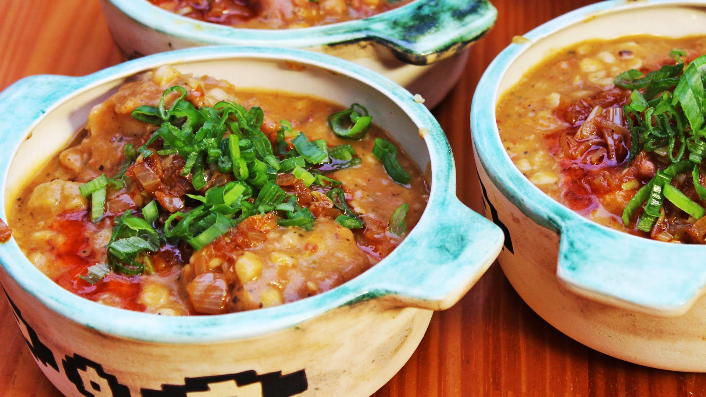

Si estas en busca de una receta bien argenta, rica y fácil de preparar:
No te vayas, Estás en el lugar indicado!
En esta ocación te traemos desde la región de cuyo y norte de nuestro país..
Un apetecible y bien familiero LOCRO CRIOLLO!!!

UN POQUITO DE SU ORIGEN
Cuenta una de las leyendas de su origen que el
locro es fruto de la cocina de los pueblos originarios quechua, o quichua, que lo llamaron
“luqru” o “rucru”. Este guiso se preparaba a base de zapallo, maíz y porotos. Es de origen precolombino,
es decir previo a la llegada de los españoles ¡hace muchísimos años! Algunos ingredientes de su receta original
de locro pueden cambiar según la tradición que tenga cada provincia argentina, pero hay algo que se mantiene en
todas: base vegetal y cocción a fuego lento durante varias horas.
Tradicionalmente se consume de manera
masiva el 25 de mayo, día en que se conmemora la formación del primer gobierno patrio argentino. Su consumo se
ha extendido desde el Noroeste y Cuyo hacia el resto del país.
VAMOS A PREPARARLO!
INGREDIENTES:
300 gr de maíz blanco partido
200 gr de poroto pallares blanco
200 gr de panceta
150 gr de chorizo criollo
1/2 chorizo colorado
200 gr de pechito de cerdo
200 g de falda
1 cebolla
500 gr de calabaza
PREPARACIÓN:
Remojar los porotos pallares y el maíz blanco 24 horas antes de preparar el guiso (guardar en recipiente con agua en heladera).
Cocinar en una cacerola el maíz junto con los porotos, la calabaza y la cebolla con 2 litros de agua.
Revolver con cuchara de madera cada 15 minutos.
Pasada una hora de cocción sumar las carnes. Revolver.
Servir el locro bien caliente en cazuela de barro
AQUÍ LES DEJO UNA RESEÑA DE NUESTROS AMIGOS "LOCOS X EL ASADO" CON MÁS INFO SOBRE ESTE PLATO